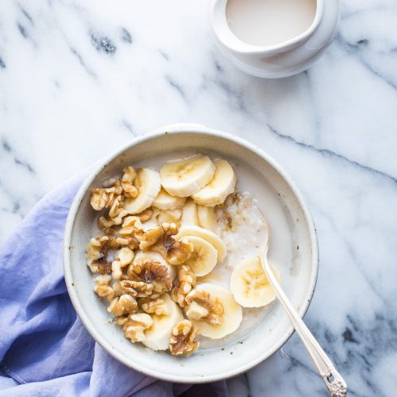
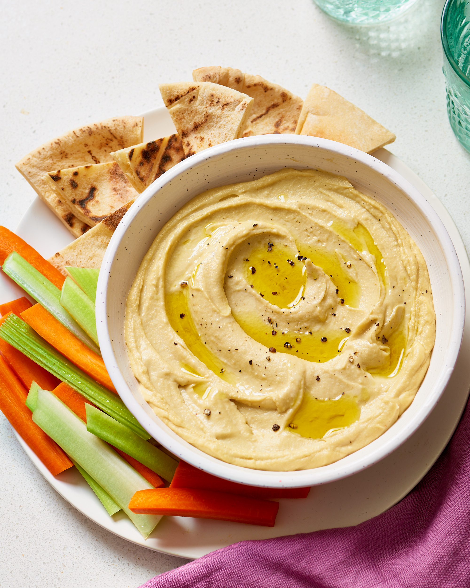

Well-being in Wexford
Healthy Porridge
Porridge is the perfect start to the day. It boosts energy, helps to reduce cholesterol and aids digestion. It's also delicious! Here is my recipe for the ultimate simple healthy porridge. You can experiment with different toppings!
Ingredients
- 50g porridge oats
- 350ml milk alternative (I love oat milk!). You can use water or regular milk here if you prefer.
- Honey to drizzle
- Fruits such as banana and blueberries (they blend in very nicely with the hot oats.)
- Nuts to sprinkle. Walnuts are my favourite.
Instructions
- Put 50g porridge oats in a saucepan and pour in 350ml milk/water
- Bring to the boil and simmer for 4-5 minutes, stirring from time to time to make sure it doesn't stick to the bottom of the pan
- To serve drizzle with honey and top with fruits and nuts
Chia Pudding
 Chia pudding is another easy healthy breakfast. It's tasty, creamy, satisfying and is loaded with protein, omega-3s and fiber! It involves soaking chia seeds overnight so a little mroe planning is involved with this one.
Chia pudding is another easy healthy breakfast. It's tasty, creamy, satisfying and is loaded with protein, omega-3s and fiber! It involves soaking chia seeds overnight so a little mroe planning is involved with this one.
Ingredients
- 3-4 tbsp chia seeds
- 1 cup oat milk (or your milk alternative of choice)
- 1/4 tsp vanilla essence
- 1/2 tbsp sweetener of choice(I like honey)
- handful of raspberries
- 1 tsp peanut butter
Instructions
- In a bowl or small jar stir together chia seeds, milk, sweetener, peanut butter and vanilla.
- Add rasperries on top of the chia mixture.
- Once the chia pudding mixture if well combined, cover it and leave to set in the fridge overnight or for 1-2 hours if you don't have time to set it overnight. (It should be nice and thick, not liquidy. Add more chia seeds if needed and return it to the fridge).
- Chia pudding can be stored for up to 5-7 days in an airtight container in the fridge.
Hummus
Hummus is incredibly good for you (and delicious!). Chickpeas are the star ingredient and are high in protein, fibre and many micronutrients. Hummus is great served with warm pitta bread or with crunchy vegetables for dipping!
Ingredients
- 1 x 400g tin of chickpeas
- 1 small clove of garlic
- 1 tablespoon tahini
- 1 lemon
- Extra virgin olive oil
- Pinch of salt
Instructions
- Drain and rinse the chickpeas and add into a food processor
- Peel and add the garlic
- Add the tahini, the juice of the lemon and 1 tbsp of olive oil
- Season with a pinch of salt and then blend
- Add more lemon juice or a splash of water if it's too thick, then transfer to a bowl to serve!